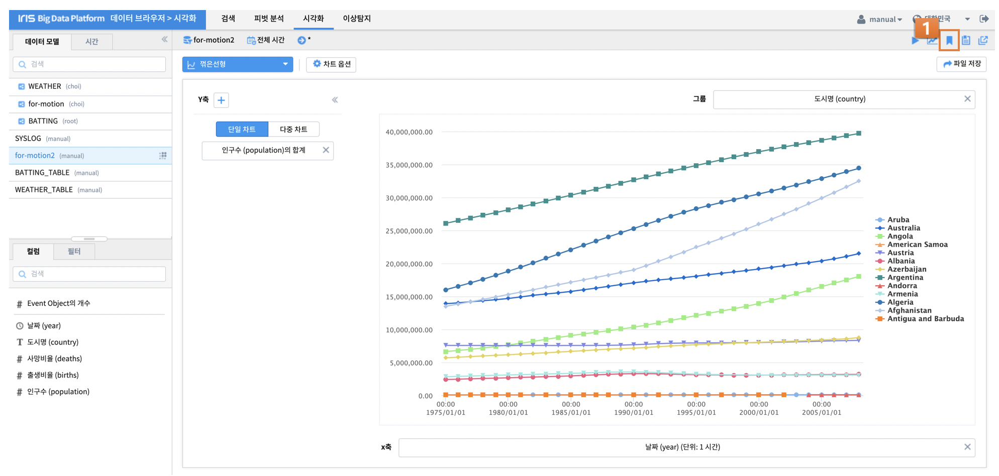
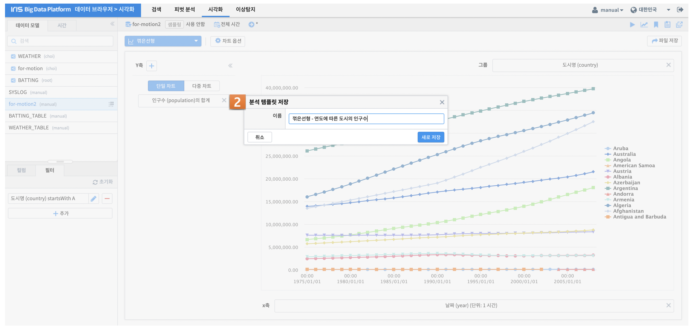
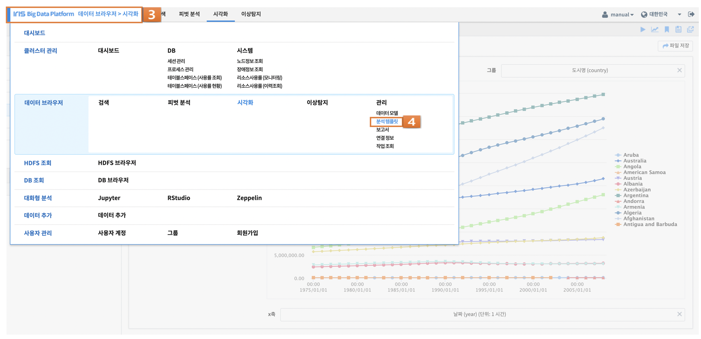
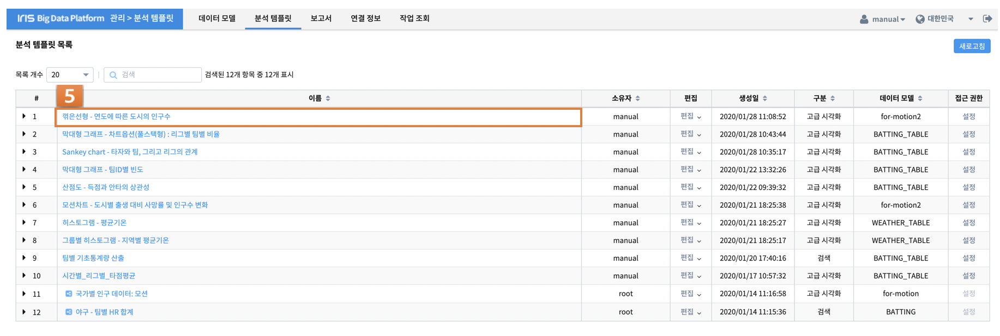

시각화 분석 템플릿 저장¶
작성한 시각화 내용을 시각화 메뉴에서 추후에 다시 불러오거나, IRIS Studio에서 재사용하기 위해 분석 템플릿에 저장하는 방법입니다.
분석 템플릿 저장
시각화 차트 오른쪽 상단의 분석 템플릿 버튼을 눌러 차트를 저장합니다.
분석 템플릿 신규이름 생성
저장하고자 하는 분석 템플릿의 이름을 저장합니다. 이는 관리>분석 템플릿 검색이나 IRIS Studio에서 검색 가능한 이름입니다.
분석 템플릿으로 이동
저장을 완료하였으면 화면 가장 왼쪽 상단의 IRIS Big Data Platform 메뉴에서
관리 > 분석 탬플릿 을 클릭합니다.
저장된 분석 템플릿
저장된 분석 템플릿을 확인 가능합니다.